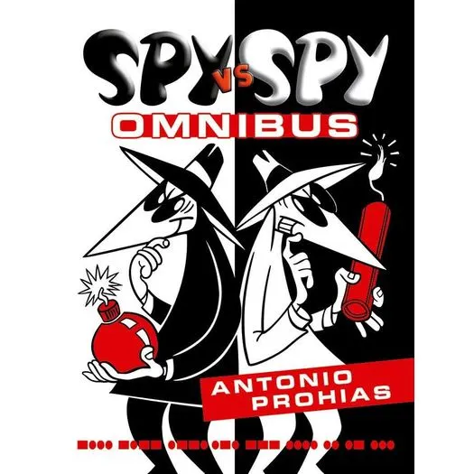

{% with messages = get_flashed_messages(with_categories=true) %} {% if messages %} {% for category, message in messages %}
{{ message }}
{% endfor %} {% endif %} {% endwith %} {% block content %}{% endblock %}